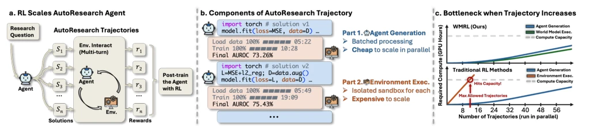
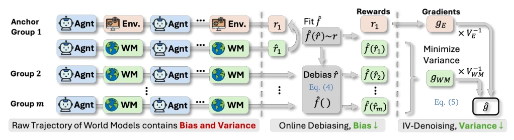

This paper executes an extreme "cost reduction and efficiency enhancement" maneuver for AutoResearch's RL training. The authors keenly point out that as the number of trajectories increases, expensive environment execution becomes a bottleneck, while the generation part allows for batching; this asymmetry directly impedes traditional RL's scalability. The WMRL scheme substitutes real execution with a world model. Although world models introduce bias and noise, the authors do not feign perfection like certain overpromising works, but instead rigorously implement online debiasing and inverse-variance denoising. Experimental results are impressive: 4B and 9B models not only train 3-4 times faster on MLE-Dojo and DSBench, but also outperform 48B and 120B open-source large models in performance. However, this approach relies on the world model's predictive capability; if the task's inherent randomness is too high to predict (e.g., pure physical collisions), the method may degenerate into pure GRPO. After all, "there is no free lunch," though the authors have calculated the cost quite ingeniously.
AutoResearch agents can significantly enhance research capabilities through RL training, but face a fundamental contradiction when scaling up training. As shown in Figure 1, RL trajectories contain two parts: "generation" and "execution"; the generation part can share computing resources via batching, with costs growing almost linearly; while the execution part (e.g., running code, training models) must occupy independent sandboxes and real GPU time, cannot be batched, causing execution costs to increase linearly with trajectory count, becoming a training bottleneck [19, 20]. Existing works such as MLE-Dojo [19] and DSBench [30] have constructed large-scale environments but have not solved this scalability limitation. Although World Models have been applied in the control field [21, 22], directly replacing the environment in AutoResearch introduces bias and noise in the reward signal, leading to degraded convergence [46, 47]. Existing methods mostly alleviate this through offline calibration or policy constraints, lacking theoretical guarantees for dynamic correction within the training loop. Therefore, a new framework is urgently needed that can both eliminate the execution bottleneck and theoretically guarantee convergence.

Figure 1: AutoResearch trajectories scale asymmetrically, making environment execution the bottleneck, and our WMRL removes it. (a) Per research question, the agent proposes a group of solutions Si, graded by execution into rewards ri, and RL demands a massive number of such trajectories. (b) Per trajectory, generation amortizes compute via batching, but execution needs one isolated sandbox per solution. (c) Execution compute thus hits capacity first in traditional RL, whereas WMRL scales without this limit.
方法Method
论文提出World Model RL (WMRL)框架，核心是用世界模型替代昂贵的环境执行，并引入两种机制修正其误差。整体流程如下：在RL训练循环中，大部分轨迹（World Model groups）由世界模型预测奖励，仅保留一小部分（Anchor groups，约10%）进行真实环境执行以获取“锚点信号”。
The paper proposes the World Model RL (WMRL) framework, the core of which is using a world model to replace expensive environment execution, and introducing two mechanisms to correct its errors. The overall process is as follows: in the RL training loop, most trajectories (World Model groups) have rewards predicted by the world model, only a small portion (Anchor groups, approximately 10%) undergo real environment execution to obtain "anchor signals".
1. **World Model Substitution**: Use an LLM with the same architecture as the Agent as the world model, input task context and Agent-generated solutions, directly predict execution results and rewards. This allows the execution part to be batched like the generation part, eliminating the computational bottleneck.
2. **Online Debiasing**: For the systematic bias of world model rewards, utilize paired data of true rewards and predicted rewards in the anchor group, fit a monotonic mapping function through isotonic regression. This function dynamically calibrates all world model predicted rewards, eliminates the bias term, and updates continuously during training to track drift.
3. **Inverse-Variance Denoising**: For random noise in rewards, fuse two paths of gradient estimates from real execution (low variance, scarce) and world model (high variance, abundant). Fusion weights are inversely proportional to the variance of their respective gradients, thereby mathematically minimizing the total variance of update gradients, making convergence speed superior to single data sources.
Theoretical analysis proves that these two mechanisms respectively transform the bias term (O(B^2)) and noise term (O(σ^2)) in the convergence bound into terms that decay with training time, strictly improving convergence guarantees.

Figure 2: WMRL corrects the world model rewards in two steps. Each row is one of the m groups in a batch. Every group is graded by the world model into biased, noisy scores ˆr, and anchor groups are also graded by real execution. The monotone map ˆf is fit on the score pairs (Online Debiasing) to remove the bias, and gE and gWM are fused by Inverse-Variance Denoising to lower the update variance.
Experiments are conducted on AutoResearch (MLE-Dojo, DSBench) and Embodied VLA (LIBERO-Long) tasks. Baselines include untrained models, ultra-large parameter models (Kimi-48B, Nemotron-120B), real environment GRPO, and pure world model training. Main findings: 1. **Efficiency and Performance**: WMRL training speed on 4B and 9B models is 3.1-3.4 times faster than real environment GRPO, and surpasses real environment training on multiple benchmarks, performance even better than 48B and 120B open-source models (Table 1). 2. **Generalization**: In VLA tasks, WMRL is equally effective, improving MiniVLA-1B's success rate by 3.8 percentage points, especially performing better in unseen initial states (Table 2). 3. **Ablation Studies**: Using debiasing or denoising alone can improve performance, but combining both yields the best effect, verifying complementarity (Table 3). This indicates WMRL not only solves AutoResearch's bottleneck but is also applicable to other RL scenarios with expensive execution.